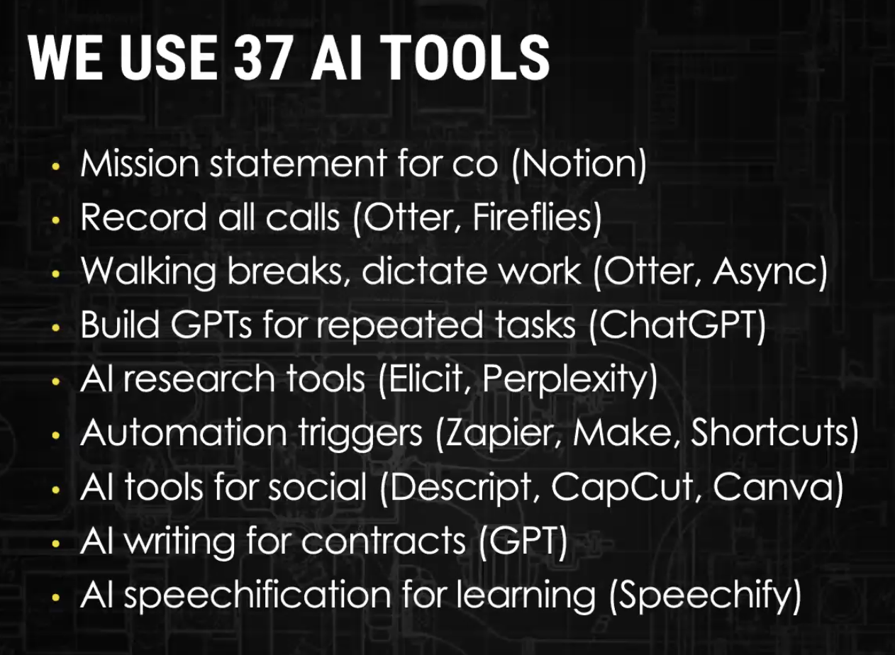
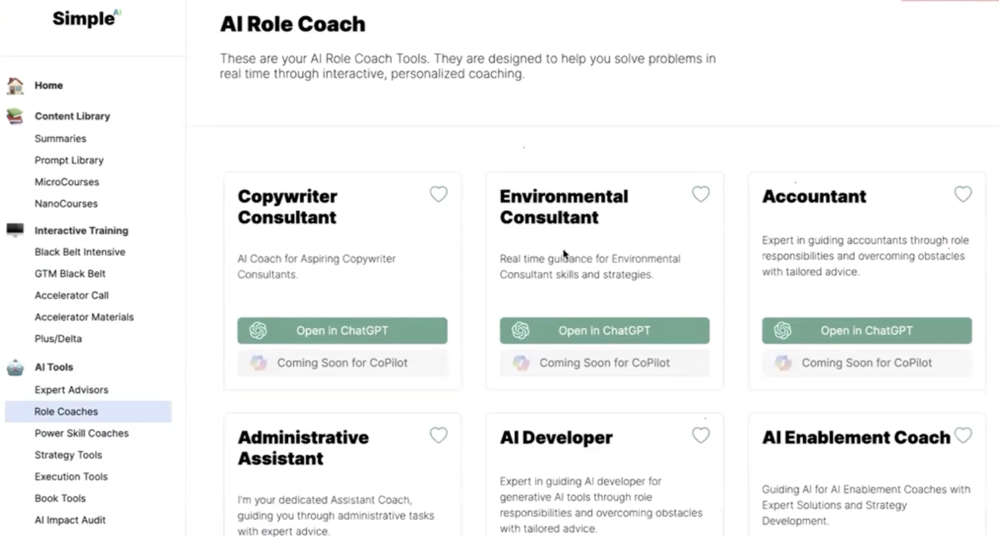
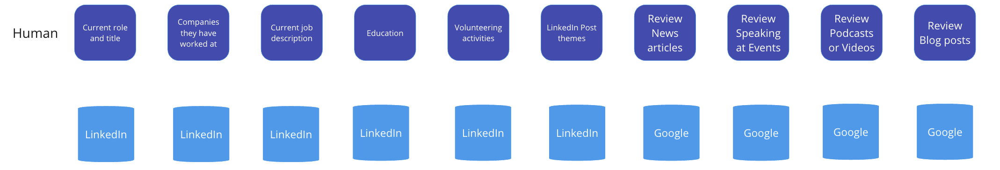
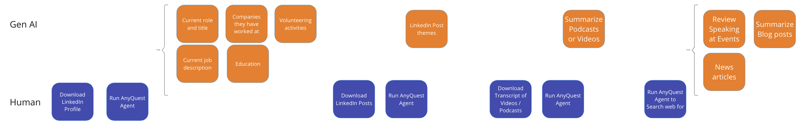
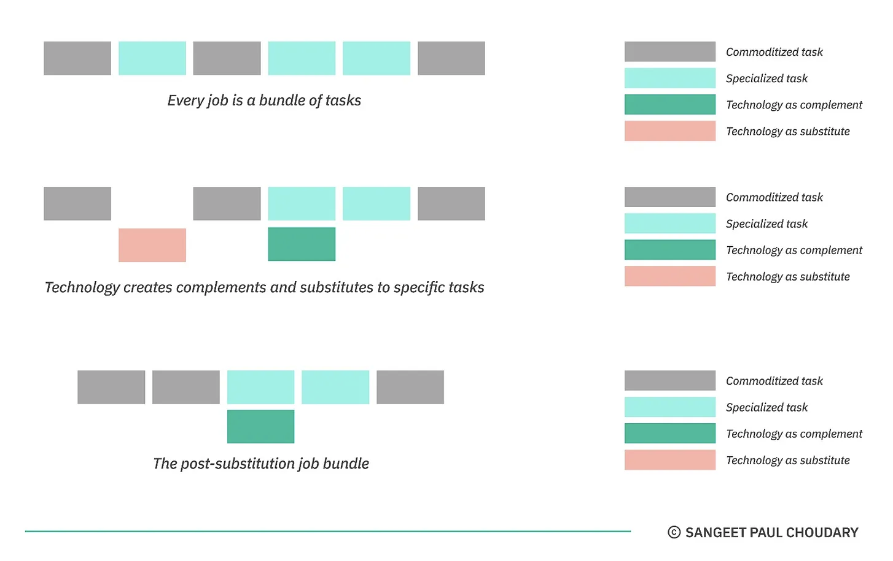

Productivity Gains from GenAI?

I recently came across this article from Microsoft and LinkedIn about GenAI in organizations and I have been struggling to rationalize the findings in this report and my personal experience with GenAI.
So here are some stats from the report -
But then, there are these statements
And then there is this
Now they’re turning their sights to non-technical talent with AI aptitude—the skills to use generative AI tools like ChatGPT and Copilot:
There were 4 types of GenAI users identified -
As someone that spends almost all their time doing something related to GenAI, it is fair to say that I come across very few power users or explorers in the organizations I work with. I come across a lot of power users / explorers on LinkedIn, but that is because I am in that bubble and my feed makes it seem like everyone is a GenAI expert.
That being said what makes sense to me are that people are using GenAI but organizations are not seeing the benefit and this is the crux of my experience. This is because the usage of GenAI is for productivity gains and productivity gains aren't beneficial to an organization unless they can
I sat through 2 extremely insightful trainings last week from Allie K. Miller and Steve Cunningham. Both Allie and Steve epitomize the AI Power User and they have actually built AI first companies where everyone in their company is a power user.
Allie's session was "How to use AI to 10x your productivity." and she shared how her team uses 37 different tools for various tasks.

She and her team are absolutely benefiting from the productivity gains of GenAI.
Steve also shared the many tools that his team has built for various use cases - Expert Advisor, Role Coach, Strategy, Execution etc.

After these 2 sessions, I got inspired to create my own tool and I picked an area that I spend quite some time doing manual work. I speak to a lot of founders and executives and before every meeting, I do research about them and this currently is a manual process and it takes me anywhere from 15 mins to an hour (if they have podcasts / blogs etc.).
Assuming I meet 10 executives a month and I spend on average 30 mins researching each executive, that comes out to 300 minutes = 5 hours a month.
Could I build an AI Tool that would reduce this to 5 mins per executive per month = 50 minutes or about 80% time savings. So I am about 5X more productive.
I documented my current process -

I then built a tool in AnyQuest.ai (I could have use Clay.com or built a custom GPT like Allie and Steve or Relevance.ai etc). I will do another post on how I built the tool.
This is what the process with the tool looks like

I took some inspiration from Sangeet Paul Choudary and his post on bundling and unbundling of tasks for my visual above.

So far so good. I saved myself about 4 hours every month on this one task. There is one additional benefit - consistency and quality. Now that I have a tool, I can basically guarantee that I will get the same high quality research every time. There will be no variance based on the person.
Going forward, I can pick other tasks and build tools and save myself even more time and become more productive.
The question is - is this something organizations care about? Will they invest in this? In all my past jobs at Tableau / Gong when trying to quantify the business impact of software, I always found that executives did not really care about business cases made around time savings / productivity. What they cared about was, how did that time savings / increased productivity help my business? This is because what I have seen is that work increases to fill time. So if I save 5 hours, there is always more work to be done and yes I am more productive but it does not lead to reduced cost / increased revenue.
We saw this with Tableau. People would spend hours trying to analyze data in Excel and when they used Tableau they could do in minutes what they did in hours / days in Excel. Here is a case study about time savings. What we saw was that the amount of analytics that now needed to be done went up significantly. So it did not reduce the number of people, it actually increased the spend on Tableau and other data technologies. To be fair, these organizations became more data driven and that had business benefits but it was now hard to show the impact of Tableau.
What executives want to hear are examples like the Klarna use case where the chatbot replaced 700 workers. So I can save GTM teams time on -
I can build tools that will take each of these tasks and leverage GenAI to be 10X more productive on each of these. Will organizations pay for this?
The other question I struggle with is - are these too many tools? Sales teams are already struggling with too much in the tech stack. If we think of each tool like an App in the App Store, we are going to inundate Sales folks with a ton more tools. Are organizations ready for this? Will this be overwhelming?
I do think that like Tableau, we will see GenAI CoEs being created in organizations. We will see GenAI "power user" / "champion" roles that will take on building these tools.
That being said, the real benefit of GenAI will really accrue to organizations when these tools become self sufficient agents where we can offload entire workflows to them. The technology is not there today (without a lot of effort and very narrow use cases) but this is where this is going.
So all these organizations experimenting, are getting ready for a world where Agents can take over workflows and displace workers, then the cost savings will be more obvious. Till then a lot of these companies will keep asking for the ROI.
This statement from an HBR article rings true - “Not a single use case in my life comes to mind when thinking of ChatGPT and everyone is going insane about it,” bemoaned one user. Others have been put off that the technology gets things wrong: “It’s so confidently incorrect about enough things for me to cast doubt on all of its answers,” said another.
If you are interested in learning more about how to leverage GenAI in your organization, need training or need to build some productivity tools, feel free to reach out to me.